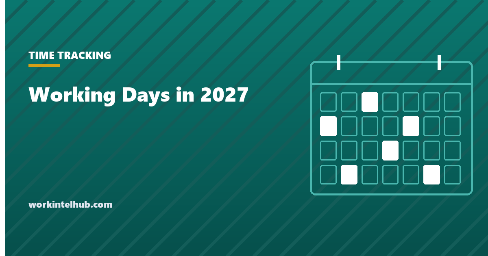

Working Days in 2027

2027 has 365 days, 261 of them weekdays. Eleven federal holidays fall on weekdays, leaving 250 working days for anyone who observes all of them, and 255 for a private employer that closes only for the six most common. At eight hours a day that is 2,088 weekday hours, or 2,000 after federal holidays.
The calculator counts any date range, with or without holidays and your own leave. Below it: the month-by-month table, the pay period count, and the reason 2027 gives some employers an extra pay date.
Working days calculator
Counts Monday to Friday between the two dates. The six-holiday option keeps New Year's Day, Memorial Day, Independence Day, Labor Day, Thanksgiving and Christmas, which is the set most private employers close for. Dates for 2026 and 2028 use the same federal observance rules.
2027 month by month
| Month | Weekdays | Working days after federal holidays | Hours at 8 a day |
|---|---|---|---|
| January | 21 | 19 | 152 |
| February | 20 | 19 | 152 |
| March | 23 | 23 | 184 |
| April | 22 | 22 | 176 |
| May | 21 | 20 | 160 |
| June | 22 | 21 | 168 |
| July | 22 | 21 | 168 |
| August | 22 | 22 | 176 |
| September | 22 | 21 | 168 |
| October | 21 | 20 | 160 |
| November | 22 | 20 | 160 |
| December | 23 | 22 | 176 |
| 2027 | 261 | 250 | 2,000 |
March, April and August have no federal holidays and are the longest working months. November is the shortest with 20, because Veterans Day falls on a Thursday and Thanksgiving is two weeks later. The eleven holidays and their observed dates are on our federal holidays 2027 page.
2,080 or 2,088: which annual hours figure to use
Payroll and HR conventions use 2,080 hours a year, which is 52 weeks of 40. It is a convenient constant for converting salaries to hourly rates and for accruing PTO per hour, and it is wrong for 2027 by a day: the year has 261 weekdays, not 260, because 365 days is 52 weeks plus one day and that day is a Friday.
Use 2,080 when the figure is a rate convention that has to match last year and next year. Use 2,088 when you are budgeting actual hours or planning capacity, and subtract holidays and expected leave from it. The capacity planning guide covers the deductions that turn 2,000 nominal hours into the 1,500 or so a person actually has for planned work.
State holidays and other days that change the count
The federal list is the floor, not the ceiling. Most states add their own: Patriots' Day in Massachusetts and Maine, Cesar Chavez Day in California, Emancipation Day in the District of Columbia, the day after Thanksgiving in a dozen states, and Election Day in several. State employees observe them; private employers in those states usually do not have to, though some school and childcare closures follow the state list and affect attendance whether or not the office is open.
Two other things change the effective count for a team. Company shutdown days between Christmas and New Year, which in 2027 run from Monday 27 to Thursday 30 December if the office closes for the week, remove four working days that the federal list does not. And leave: at a typical 15 days of PTO plus 5 sick days, an individual's 250 working days become about 230, which is the figure to use for anything that depends on one person being present. The calculator's days-off field handles both.
Pay periods in 2027, and the 27th pay date
| Frequency | Pay periods in 2027 | Note |
|---|---|---|
| Weekly | 52, or 53 for Friday paydays | 2027 has 53 Fridays |
| Biweekly | 26, or 27 if a Friday payday falls on 1 January | A Friday cycle starting 8 January gets 26 |
| Semi-monthly | 24 | Fixed by definition |
| Monthly | 12 | Fixed by definition |
The extra pay date happens because 1 January 2027 is a Friday, and so is 31 December. A biweekly payroll that pays on 1 January pays again on 31 December, 27 times in all. That is 27 cheques for hourly staff, which is correct because they are paid for hours worked, and a problem for salaried staff paid a fixed amount per period, who would receive an extra period's pay unless the annual salary is divided by 27 for the year or the employer decides to absorb the cost. Decide before the first payroll of the year, tell people, and check that benefit deductions taken per pay period are not also collected 27 times. The timesheet template page covers the pay-period records that have to line up with whichever calendar you choose.
Key takeaways
- 2027 has 261 weekdays. After eleven federal holidays, 250 working days; after the six most private employers observe, 255.
- That is 2,088 weekday hours or 2,000 after federal holidays, against the 2,080 convention. Use the convention for rates and the real figure for capacity.
- March, April and August have no federal holidays. November has 20 working days.
- 1 January and 31 December 2027 are both Fridays, so 2027 has 53 Fridays.
- A biweekly payroll paying on 1 January gets 27 pay dates. Divide salaries by 27 for the year or absorb the cost, and check per-period deductions.
Frequently asked questions
How many working days are there in 2027?
261 weekdays. Subtracting the eleven federal holidays that fall on weekdays gives 250 working days. A private employer closing only for the six most common holidays has 255.
How many working hours are in 2027?
2,088 hours across the 261 weekdays at eight hours a day, or 2,000 hours after the eleven federal holidays. The standard payroll convention of 2,080 hours assumes 260 weekdays and is one day short for 2027.
How many weeks are in 2027?
52 weeks and one day. Because 1 January is a Friday, the year contains 53 Fridays, which matters for weekly and biweekly payrolls that pay on Fridays.
Does 2027 have 27 pay periods?
For biweekly payrolls that pay on Friday 1 January 2027, yes: 27 pay dates, the last on 31 December. Biweekly cycles anchored to other dates get the usual 26. Weekly Friday payrolls get 53.
Which month has the most working days in 2027?
March and December each have 23 weekdays. March, April and August have no federal holidays, so March has 23 working days and is the longest working month. November has 20, the fewest.
How do I count working days between two dates?
Count the Monday-to-Friday days in the range, then subtract any holidays your employer observes that fall on those days. The calculator above does it for any range in 2026, 2027 or 2028 and lets you subtract your own leave.